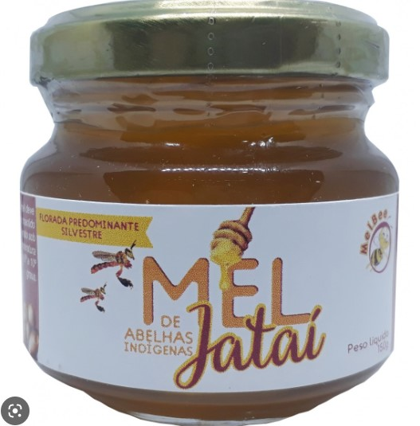
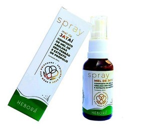

-
Mel Mandaçaia

O mel de Mandaçaia é produzido a partir do néctar das flores da Mandaçaia, uma árvore nativa do Brasil. É conhecido por ter uma cor amarelada e uma textura líquida, e é descrito como tendo um sabor suave e adocicado, com notas florais. O mel de Mandaçaia é rico em minerais e vitaminas, e é frequentemente utilizado como um adoçante natural e ingrediente culinário. Além disso, também é considerado um produto artesanal valorizado em algumas regiões do Brasil
R$25,00
-
Mel Jataí
O mel de Jatai é um mel produzido a partir do néctar da flor da jatai, uma árvore nativa da Amazônia. É conhecido por ter uma cor escura e uma textura grossa, e é frequentemente descrito como tendo um sabor forte e adocicado, com notas de caramelo e frutas secas. Além disso, é também considerado um mel de alta qualidade devido ao seu alto teor de antioxidantes e minerais. O mel de Jatai é utilizado tanto como adoçante quanto como ingrediente em receitas culinárias
R$18,00
-
Própolis
A propolis produzida por abelhas nativas é considerada superior à produzida por abelhas cultivadas, devido à sua maior pureza e diversidade de compostos ativos. Ela é rica em antioxidantes, anti-inflamatórios e propriedades antibacterianas, tornando-a uma opção valiosa para uso na medicina natural e na indústria cosmética, com benefícios como fortalecimento do sistema imunológico, alívio da inflamação e prevenção de doenças bucais.
R$35,00